Smale 的工作：h-Cobordism 定理与广义庞加莱猜想
参考书目：Introductory Lectures on Manifold Topology Signposts (Thomas Farrell & Yang Su) — 一本非常舒适的入门书
1 第一部分：拓扑广义庞加莱猜想
1.1 主要结果
1.1.1 Smale 定理 (GPC: 拓扑广义庞加莱猜想)
Theorem 1 (广义庞加莱猜想) 设 \(M^m\) 是闭光滑流形，维数 \(m \geq 5\)。若 \(M\) 是同伦球面，则 \(M\) 同胚于球面。
主要工具 (\(m \geq 5\))：h-Cobordism 定理
Theorem 2 (h-Cobordism 定理) 设 \(W^m\) 是光滑的 h-cobordism，若 \(W\) 单连通且维数 \(m \geq 6\)，则配边 \(W\) 微分同胚于 \(\partial^- W \times [0,1]\)（相对于边界 \(\partial^- W\)）。
1.1.2 怪球与 h-Cobordism 类
利用 h-cobordism 定理，对于单连通光滑流形（特别是光滑同伦球面），当 \(n \geq 5\) 时有双射：
\[\frac{\{S^n \text{ 上的光滑结构}\}}{\text{微分同胚}} \longleftrightarrow \frac{\{n \text{ 维同伦球面}\}}{\{\text{h-cobordism}\}}\]
- 左边：球面上所有光滑结构，即所有怪球构成的集合
- 右边：所有同伦球面的配边类，记为 \(\Theta^n\)
\(\Theta^n\) 的群结构：
| 运算 | 定义 |
|---|---|
| 乘法 | 连通和 |
| 单位元 | \(S^n\) 上的标准光滑结构 |
| 逆元 | 反转定向，记为 \(-\Sigma\)（在柱 \(\Sigma \times I\) 的内部挖去 \(D^{n+1}\) 即得所需配边） |
\(\Theta^n\) 的阶数：
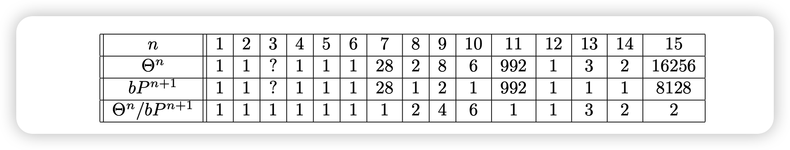
这个表格给出了各维数上怪异球面的个数（\(n \neq 4\)），与伯努利数（数论中的量）密切相关。
由于 h-cobordism 定理在 4 维失效（h-cobordism 类中的元素未必微分同胚），\(\Theta^4\) 的阶数为 1 不能推出 4 维光滑庞加莱猜想。
1.2 GPC 的证明
本节假设 h-cobordism 定理成立，在此基础上给出 GPC 的证明。
1.2.1 h-Cobordism 的定义
Definition 1 (Cobordism) 一个 \((m+1)\) 维 cobordism 是流形 \(W^{m+1}\)，其边界可写成两部分的不交并： \[\partial W = \partial^- W \sqcup \partial^+ W\] 此时称 \(W\) 是从 \(\partial^- W\) 到 \(\partial^+ W\) 的配边。
Definition 2 (h-Cobordism) \((m+1)\) 维的 h-cobordism 是配边 \(W^{m+1}\)，满足含入映射 \[\partial^- W \hookrightarrow W, \quad \partial^+ W \hookrightarrow W\] 都是同伦等价。
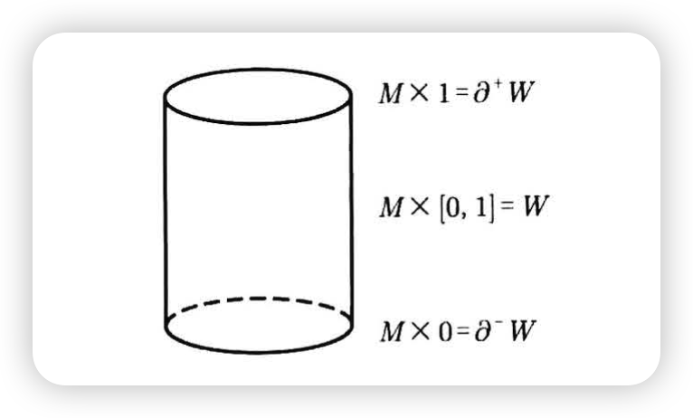
1.2.2 h-Cobordism 定理
Theorem 3 (h-Cobordism 定理（完整表述）) 设 \(W^{m+1}\) 是光滑的 h-cobordism。若 \(W\) 单连通且 \(m \geq 5\)，则 \[W \cong_{\text{diff}} \partial^- W \times [0,1] \quad (\text{rel } \partial^- W)\]
1.2.3 GPC 的证明 (\(n \geq 6\))
Proof. 设 \(M^m\) 是光滑流形，维数 \(\geq 6\) 且是同伦球面。
Step 1. 在 \(M^m\) 上挖去两个隔开的 disk，得到配边 \(W^m\)。

Step 2. 由 Lemma 1，\(W\) 单连通且是光滑 h-cobordism。
Step 3. 应用 h-cobordism 定理： \[W \cong_{\text{diff}} \partial^- W \times [0,1] = S^{m-1} \times [0,1] \quad (\text{rel } \partial^- W = S^{m-1})\]
Step 4. 重新粘回挖去的 disk：
- 利用相对微分同胚，将底部 disk 通过边界球面上的 identity 映射粘回，得到 \(\mathbb{D}^m\)
- 将顶部 disk 粘回（边界上的粘接映射可以是任意的）：
- 这会影响光滑结构
- 但不影响拓扑结构——仍同胚于 \(S^m\)
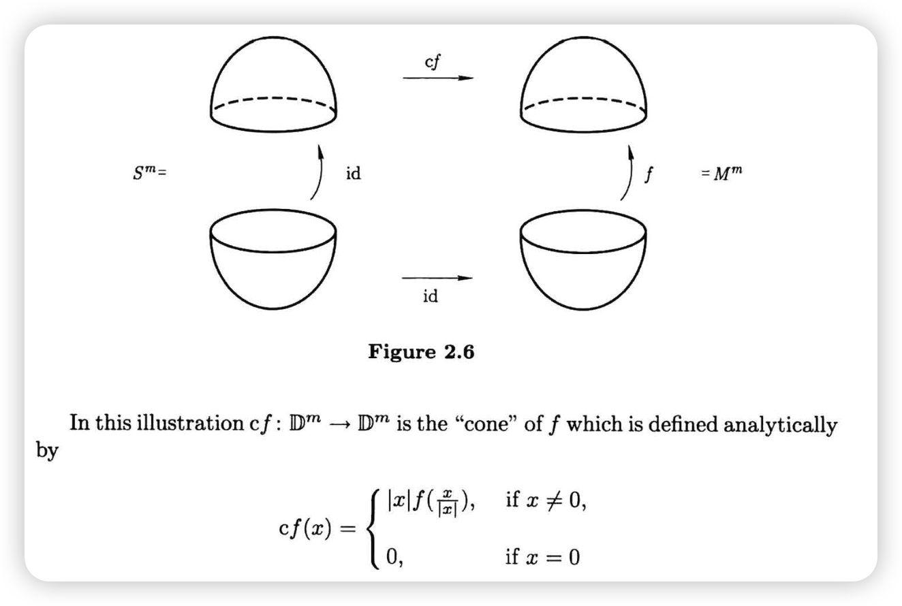
结论：\(M \approx S^m\)。
Lemma 1 (同伦球面上挖去两个 disk 得到 h-cobordism (\(n \geq 6\))) 设置：从同伦球面 \(M\) 出发，挖去两个 disk \(D^+, D^-\)，得到配边 \(W\)。
Proof. (I) 证明 \(W\) 单连通
需要从「\(M\) 单连通」推出「\(W\) 单连通」。
\(M\) 单连通 \(\Rightarrow\) \(W \cup D^+\) 单连通：
对 triple \((M, W \cup D^+, D^-)\) 使用 Van Kampen 定理
（注意 \(D^-\) 单连通，\(D^- \cap (W \cup D^+) = S^{m-1}\) 单连通）\(W \cup D^+\) 单连通 \(\Rightarrow\) \(W\) 单连通：
对 triple \((W \cup D^+, W, D^+)\) 使用 Van Kampen 定理
(II) 证明 \(\partial^+ W \hookrightarrow W\) 是同伦等价
诱导同调群同构：
对 triple \((W \cup D^+, W, D^+)\) 使用 Mayer-Vietoris 序列（注意 \(W \cap D^+ = \partial^+ W\)）Tip这里需要 \(W \cup D^+\) 的同调群为 0，由 triple \((M, W \cup D^+, D^-)\) 的 Mayer-Vietoris 序列得到。
使用 Homology Whitehead 定理：
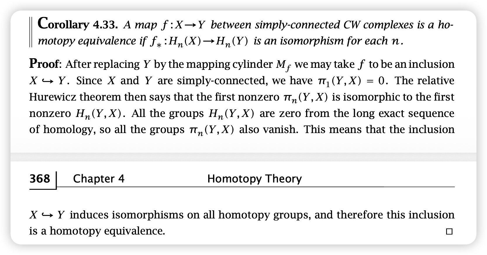
Figure 7: Homology Whitehead 定理 单连通 + 同调等价 \(\Rightarrow\) 同伦等价
结论：\(\partial^+ W \hookrightarrow W\) 是同伦等价
(III) \(\partial^- W \hookrightarrow W\) 是同伦等价的证明类似。
1.2.4 附：Whitehead 定理
问题：如何证明两个拓扑空间同伦等价？
Definition 3 (弱同伦等价) 称空间 \(X, Y\) 弱同伦等价，如果存在映射 \(f: X \to Y\)，使得 \[f_*: \pi_i(X) \xrightarrow{\cong} \pi_i(Y) \quad \forall i\]
Theorem 4 (Whitehead 定理) 任意两个 CW 复形 \(X, Y\)，若弱同伦等价，则同伦等价。
弱同伦等价不仅要求同伦群同构，还要求存在映射 \(f\) 实现之。存在同伦群同构但不同伦等价的例子。
Theorem 5 (Homology Whitehead 定理) 对于单连通空间，同调等价（映射诱导同调群同构）即可得到同伦等价。
2 第二部分：h-Cobordism 定理的证明
2.1 预备知识
2.1.1 Isotopy（同痕）
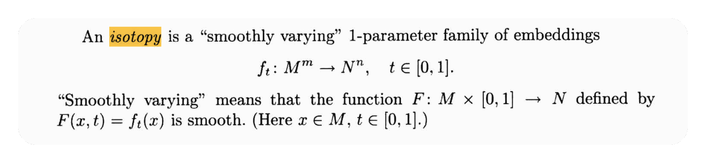
- 我们讨论的同痕总是光滑同痕
- 连续同痕不能区分纽结：
2.2 Handle 分解
（粘接映射的内容略）
2.3 Handle 运算法则
2.3.1 同痕不变性
Proposition 1 (同痕扩张定理)
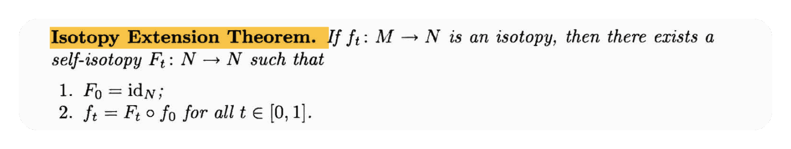
Lemma 2 (同痕引理) 将 handle \(h\) 粘到流形 \(M\) 上时，若使用同痕的粘接映射 \(f, g: \partial^- h \to \partial M\)，则得到的流形同胚： \[M +_f h \cong M +_g h\]
Proof.
2.3.2 粘接顺序的交换性
2.3.2.1 基本概念
Definition 4 (Attaching sphere 与 Complementary sphere) Handle 一般写成乘积 \(D^i \times D^{n-i}\)：
| 部分 | 名称 | 子空间 | 边界 |
|---|---|---|---|
| 第一分量 | Attaching part | \(D^i \times \{0\}\) (attaching disk) | Attaching sphere \(\mathscr{S}\) |
| 第二分量 | Complementary part | \(\{0\} \times D^{n-i}\) (complementary disk) | Complementary sphere \(\mathcal{S}\) |
2.3.2.2 Thom 横截性定理
考虑三元组 \((W, M, N)\)，其中 \(M, N\) 是 \(W\) 的子流形。
Theorem 6 (Thom 横截性定理)
- 可在 \(W\) 内做微小扰动（同痕），使 \(M, N\) 横截相交
- 若 \(M, N\) 横截相交，则 \[\dim M + \dim N = \dim W + \dim(M \cap N)\]
Example 1 设 \(\dim W = 3\)，\(\dim M = \dim N = 1\)。由定理，可扰动使 \(M, N\) 横截相交，此时 \[\dim(M \cap N) = 1 + 1 - 3 = -1 \implies M \cap N = \varnothing\]
可通过控制维数保证子流形不相交。
2.3.2.3 Lemma：顺序引理
Lemma 3 (顺序引理) 考虑 \((M + h_1) + h_2\)。若 \(h_2\) 的粘接球面 \(\mathscr{S}\) 与 \(h_1\) 的补球面 \(\mathcal{S}\) 不相交（它们都是 \(\partial^+(M + h_1)\) 的子流形），则可交换粘接顺序： \[(M + h_1) + h_2 \cong (M + h_2) + h_1\] 此时记作 \(M + (h_1 \sqcup h_2)\)。
Proof. 若不相交，可在 \(\partial(M + h_1)\) 上挖去补球面 \(\mathcal{S}\)，将 \(\partial^- h_2\) 收缩到 \(\partial M\) 上。
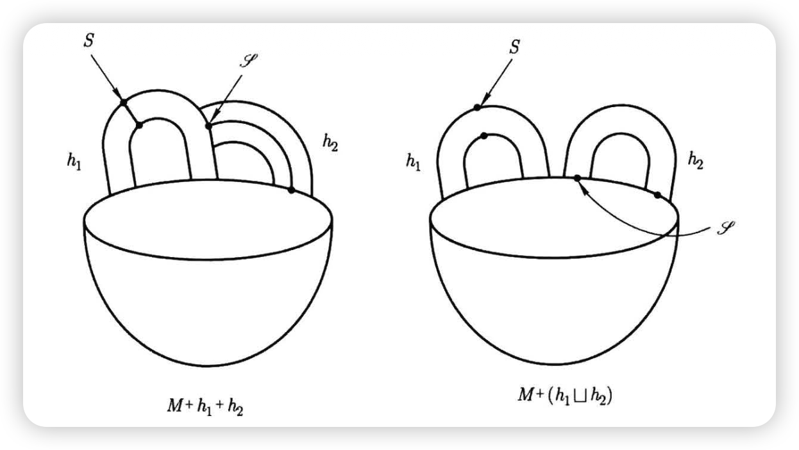
Corollary 1 若 \(\mathrm{index}(h_2) \leq \mathrm{index}(h_1)\)，则 \[M + h_1 + h_2 = M + (h_1 \sqcup h_2) = M + h_2 + h_1\] 即总可从 index 更小的 handle 开始粘接。
Proof. 设 \(\mathrm{index}(h_1) = i_1\)，\(\mathrm{index}(h_2) = i_2\)，\(i_2 \leq i_1\)。
- 补球面维数：\((n - i_1) - 1\)
- 粘接球面维数：\(i_2 - 1\)
- 维数之和：\(n - i_1 + i_2 - 2 \leq n - 2\)
两者都是 \(\partial(M + h_1)\)（维数 \(n-1\)）的子流形。由 Thom 横截性定理，相交维数为 \((n-2) - (n-1) = -1\)，即可做同痕使两者不相交。由 Lemma 3 得证。
以后总假设按 index 从小到大粘接。Index 相同时，粘接顺序可交换（或认为同时进行）。
标准分解：
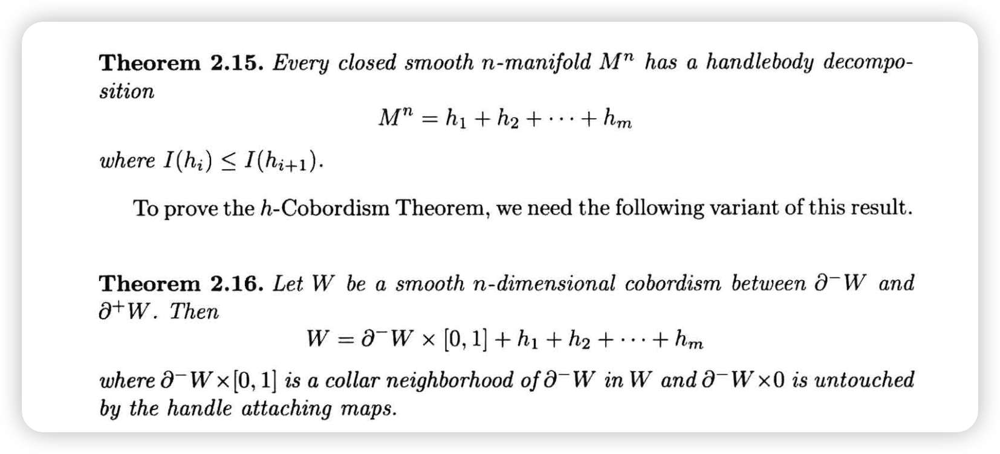
2.3.3 几何与代数消解
2.3.3.1 几何消解的例子
粘接相邻维数的 handle 时，有时会出现消解现象：
在 \(M\) 上粘接 0-handle \(h_1\) 和 1-handle \(h_2\)，结果可收缩到 \(M\)。关键观察：\(h_1\) 的补球面与 \(h_2\) 的粘接球面恰好相交于 1 点。
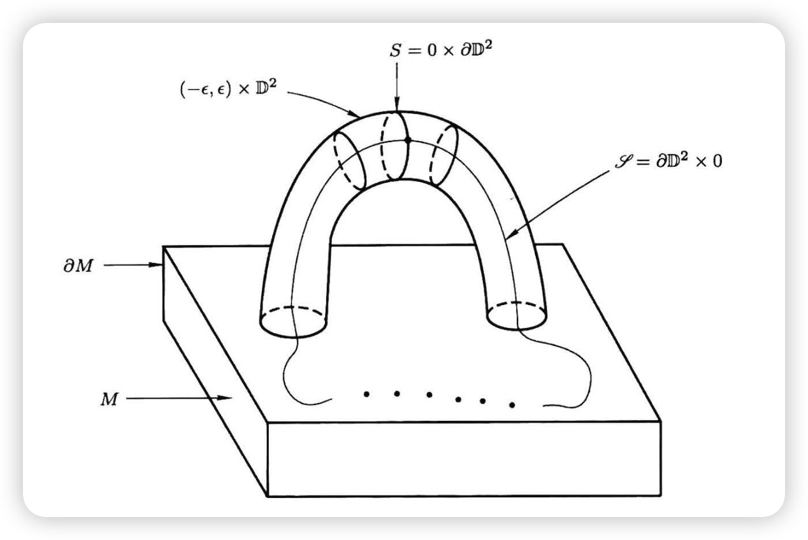
2.3.3.2 几何消解
Lemma 4 (几何消解) 对于 \(M + h_1 + h_2\)，若 \(h_2\) 的粘接球面 \(\mathscr{S}\) 与 \(h_1\) 的补球面 \(\mathcal{S}\) 恰好横截相交于一点，则 \[M + h_1 + h_2 \cong M\]
由 Thom 横截定理，这只发生在 \(\mathrm{index}(h_2) = \mathrm{index}(h_1) + 1\) 时。
Proof. 将 handle \(h_1\) 分割成两部分，于是 \(h_1, h_2\) 被分割成三部分 \(A, B, C\)（都是 \(D^3\)）：
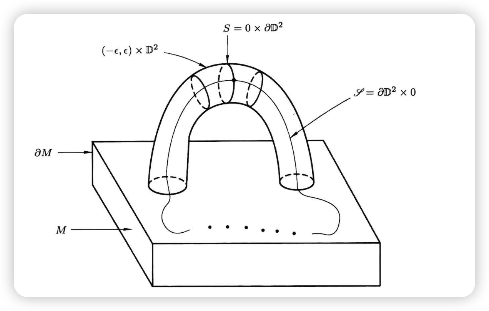
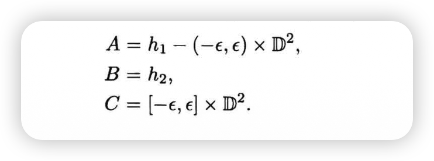
粘接两个 handle 等同于 \(((M \cup A) \cup B) \cup C\)。关注交集：
沿 \(D^2\) 粘 \(D^3\) 不改变拓扑（想象立方体放在桌面上）：
故 \(M + h_1 + h_2 \cong M\)。
2.3.3.3 代数消解 / Whitney Trick
考虑 Lemma 4 的情形，但改为考虑代数相交数： \[\sigma(\mathcal{S}, \mathscr{S}) := \sum_{x \in \mathscr{S} \cap \mathcal{S}} \sigma(x)\]
Lemma 5 (代数消解（Whitney Trick）) 条件：设 \(N = \partial(M + h_1)\) 单连通，\(\dim M = n \geq 6\)，\(\mathrm{index}(h_1) = i\) 满足 \(2 \leq i \leq n - 3\)。
结论：若代数相交数为 \(\pm 1\)，则粘接映射 \(f: \partial^- h_2 \to N^{n-1}\) 可同痕到 \(f'\)，使新粘接球面 \(\mathscr{S}'\) 与 \(\mathcal{S}\) 的几何相交数为 1。
由 Lemma 4，得 \(M + h_1 + h_2 \cong M\)。
Proof. 只需证明可消去相邻的、符号相反的两个交点。设这两点为 \(x, y\)：
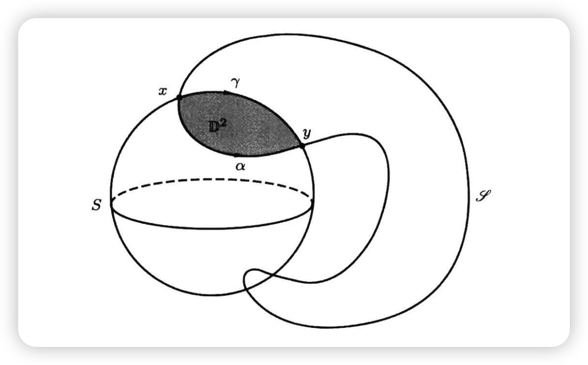
分别在 \(\mathscr{S}\) 和 \(\mathcal{S}\) 上用 arc 连接 \(x, y\)，使两 arc 在 \(x, y\) 外无交点，得到一个 loop
由 \(N\) 单连通，此 loop bounds 一个拓扑 disk \(D^2\)
由 Whitney 嵌入定理（Thom 横截性定理）及 \(n \geq 6\)，可假设 \(D^2\) 光滑嵌入 \(N\)
Tip嵌入的说明要证不自交，将 \(D^2\) 微小平移得 \((D^2)'\)，需保证 \(D^2 \cap (D^2)' = \varnothing\)。由于 \(\dim N = n - 1 \geq 5\)，两 disk 维数和为 \(4\)，相交维数为 \(4 - 5 = -1\)，即无交点。
沿 embedded \(D^2\) 将 \(\mathscr{S}\) 落入 \(\mathcal{S}\) 的部分”划出去”，交点减少两个，代数相交数不变
从最里面的交点对开始，逐步往外操作，最终将交点减少到 1 个
使用 Lemma 4 完成证明。
2.3.4 Handle Addition
限制到只有 \(i\)-handle 和 \((i+1)\)-handle 的情形。
2.3.4.1 复杂情形的处理
对于 \(M + h_1 + h_2\)（\(\mathrm{index}(h_2) = \mathrm{index}(h_1) + 1\)），已有几何/代数相交数的方法。
但实际情形更复杂：有若干 \(i\)-handle 和若干 \((i+1)\)-handle，相交方式复杂。
问题：考虑 \(M + h_1^i + h_2^i + h_3^{i+1}\)，若 \(h_1, h_2\) 满足消解条件，可得 \[M + h_1 + h_2 + h_3 = (M + h_1 + h_2) + h_3 = M + h_3\] 但 \(h_3\) 的粘接球面如何变化？
答案由 incidence matrix（关联矩阵）\(D^{i+1}\) 给出。
2.3.4.2 定义：Incidence Matrix \(D^{i+1}\)
设有 \(m_i\) 个 \(i\)-handle，补球面为 \(\mathcal{S}_1, \ldots, \mathcal{S}_{m_i}\)；有 \(m_{i+1}\) 个 \((i+1)\)-handle，粘接球面为 \(\mathscr{S}_1, \ldots, \mathscr{S}_{m_{i+1}}\)。
Definition 5 (Incidence Matrix) \[D^{i+1}_{j,k} := \sigma(\mathcal{S}_j, \mathscr{S}_k) \quad \text{(代数相交数)}\] 得到 \(m_i \times m_{i+1}\) 矩阵 \(D^{i+1}\)。
Incidence matrix 蕴含了 handle 分解的全部信息。
与同调群的联系：
- 流形的 handle 分解形变收缩后得到 cell 分解
- 链复形由 \(n\)-handle 生成的自由 Abel 群构成
- 微分映射 \(C_{i+1} \to C_i\) 恰为 incidence matrix \(D^{i+1}\)
2.3.4.3 Handle Addition
Lemma 6 (Handle Addition) 可改变 \((i+1)\)-handle 的 attaching sphere，保持粘出结果不变。例如，将 \(\mathscr{S}_1\) 改为 \[\mathscr{S}_1' = \mathscr{S}_1 \mathbin{\#} \mathscr{S}_2\] 则 \(M +_{\mathscr{S}_1} h_1 + \cdots \cong M +_{\mathscr{S}_1'} h_1 + \cdots\)
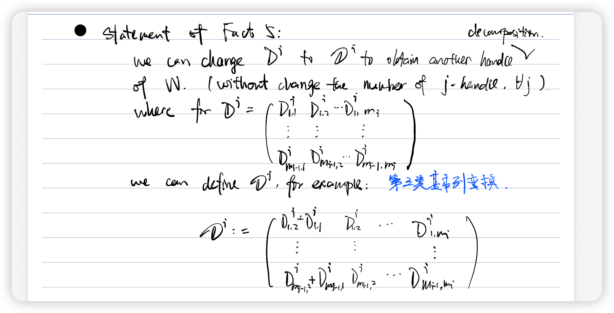
对关联矩阵的影响：第三类基本列变换（第一列加上第二列）。
条件：当 index 为 \(i, i+1\) 时，要求 \(2 \leq i \leq n - 3\)。
Proof.
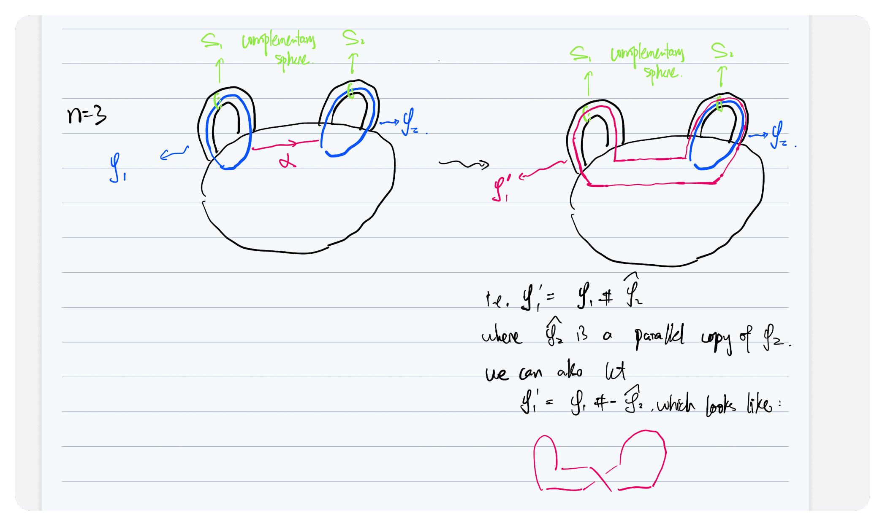
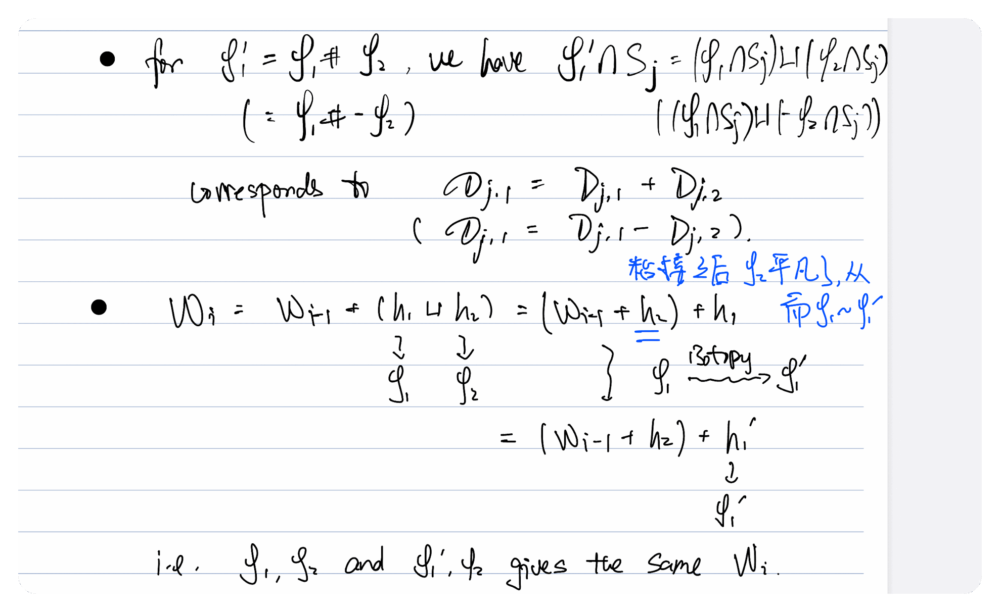
不仅可以加法，还可以减法（与反定向粘接球面做连通和）。因此 Lemma 6 允许对关联矩阵做第三类基本变换。
关于 index 限制的说明：
证明的关键步骤是找 arc \(\alpha\)，需要 \(\alpha\) 与其他粘接球面、补球面都不相交。
- 粘接球面（维数 \(i - 1\)）：需 \(n - 1 > 1 + (i - 1)\)，即 \(i \leq n - 2\)
- 补球面（维数 \(n - i\)）：需 \(n - 1 > (n - i) + 1\)，即 \(i \geq 3\)
综合得 \(3 \leq i \leq n - 2\)，即对 \((i-1)\)-handle 有 \(2 \leq i - 1 \leq n - 3\)。
2.3.5 h-Cobordism 定理的证明
2.3.5.1 Proposition：Regular Handle 分解的存在性
Proposition 2 (Regular Handle 分解的存在性)
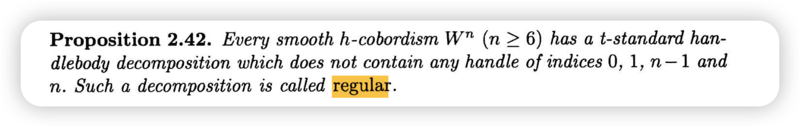
动机：在 Lemma 5 和 Lemma 6 中，考虑 \(i, i+1\) handle 时要求 \(2 \leq i \leq n - 3\)。因此 handle 的 index 落在 \([2, n-2]\) 区间内，需先排除区间外的 handle——这就是 regular form 的意义。
2.3.5.2 h-Cobordism 定理的证明
设 \(W^n\) 是 h-cobordism，取 \(W\) 的 regular handle 分解： \[W = \partial^- W \times [0,1] + h_1 + h_2 + \cdots + h_m\]
核心命题：若 \(m > 0\)，则存在另一个 regular handle 分解，具有更少的 handle。
若此命题成立，取 \(m\) 最小的 regular 分解，则 \(m = 0\)，即 \(W = \partial^- W \times [0,1]\)。
Proof (核心命题的证明). Step 1. 设所有 handle 中 index 最小者为 \(i - 1\)，考虑所有 \((i-1)\)-handle 和 \(i\)-handle。
Step 2. 考虑 \(H_{i-1}(W, \partial^- W)\)：
- 由同伦等价 \(\partial^- W \hookrightarrow W\) 及相对长正合序列，此同调群为 0
- 由胞腔同调，\(H_{i-1} = C_{i-1} / \mathrm{Im}(D^i)\)，故 \(D^i\) 是满射，即满秩
Step 3. 对矩阵 \(D^i\) 做初等变换：
- 第一类基本行列变换 + 第三类基本列变换 → 上三角矩阵 \(\mathscr{D}^i\)
- 由满射性，对角元为 \(\pm 1\)
- 再做第三类列变换 → 对角矩阵
例：
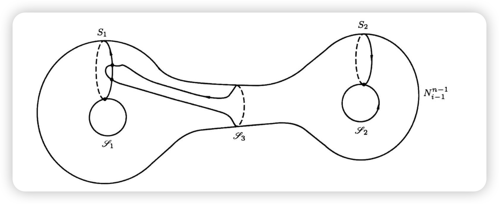
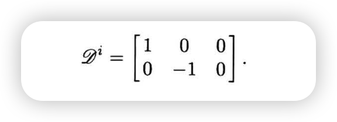
2.3.5.3 补充命题
为使证明完整，需补充：
Proposition 3 (命题 1 (Prop 2.42)) 任意 h-cobordism \(W\) 都有 regular handle 分解（不含 0, 1, \(n-1\), \(n\)-handle）。
Proposition 4 (命题 2) \(\pi_1(N_{i-1}) = 1\)。
2.3.5.4 Lemma 2.45
Lemma 7
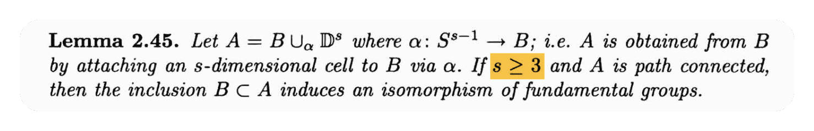
取 \(X = A - \{0\} \simeq B\)（\(0\) 为粘接 cell 的中心），\(Y = \mathrm{int}(D^s)\)，则 \[X \cap Y = S^{s-1}, \quad X \cup Y = A\] 对 triple \((A, A - \{0\}, \mathrm{int}(D^s))\) 使用 Van Kampen 定理即证。
2.3.5.5 命题 2 的证明：\(\pi_1(N_{i-1}) = 1\)
粘接 \(i\)-handle 在同伦上等同于粘接 \(i\)-cell，可用 Lemma 7。
策略：分别将 \(N_{i-1}\) 和 \(W\) 与 \(W_{i-1}\) 联系起来。
Proof. (I) \(W\) 与 \(W_{i-1}\)：
\(W\) 是在 \(W_{i-1}\) 上粘接若干 index \(\geq i\) 的 handle。由 \(i - 1 \geq 2\)，有 \(i \geq 3\)，故 \[\pi_1(W) \cong \pi_1(W_{i-1})\]
(II) \(N_{i-1}\) 与 \(W_{i-1}\)：
由于只关心同伦型，考虑 \(N_{i-1} \times I\) 与 \(W_{i-1}\)。
- \(W_{i-1}\) 是在 \(\partial^- W \times I\) 上粘接若干 \((i-1)\)-handle
- 取对偶：\(W_{i-1}\) 是在 \(N_{i-1} \times I\) 上粘接若干 index 为 \(n - (i-1) = (n-i) + 1 \geq 3\) 的 handle
故 \(\pi_1(N_{i-1}) \cong \pi_1(W_{i-1})\)。
(III) 由 \(W\) 单连通，综合得 \(\pi_1(N_{i-1}) = 1\)。
2.3.5.6 命题 1 的证明：Regular Handle 分解总存在
策略：
- 证明 0, 1-handle 可消解
- 利用对偶原理，\((n-1)\), \(n\)-handle 也可消解
对偶论证框架：给定任意 handle 分解 \(t\)：
| 步骤 | 操作 | 结果 |
|---|---|---|
| 1 | 在 \(t\) 中消解 0, 1-handle | \(t_1\) |
| 2 | 对 \(t_1\) 做对偶 | \(t_2\) |
| 3 | 在 \(t_2\) 中消解 0, 1-handle（= 消解 \(t_1\) 的 \(n{-}1\), \(n\)-handle） | \(t_3\) |
| 4 | 对 \(t_3\) 做对偶 | \(t_4\)（不含 0, 1, \(n{-}1\), \(n\)-handle） |
2.3.5.6.1 消解 0-Handle
由 \(W\) 是 h-cobordism，有 \(H_0(W, \partial^- W) = 0\)，即空间连通。
因此，对于任意 0-handle，都有唯一的 1-handle 将其与 \(\partial^- W \times I\) 所在的”主要部分”连接（其他 index 的 handle 无法使空间连通）。
这意味着 \(D^1\) 天然是对角矩阵（事实上是单位阵），可直接消解所有 0-handle。
2.3.5.6.2 消解 1-Handle (Handle Trading)
核心思想：用 handle trading 消解所有 1-handle。过程不改变 handle 总数——用 3-handle 替换 1-handle。
准备工作：
- 由于 0-handle 已消解，1-handle 直接粘接到 \(\partial^- W \times I\) 上
- 每个 1-handle 给出一个 loop
- 在 \(W_2\) 上考虑（与 \(W\) 差若干 index \(\geq 3\) 的 handle，基本群一致）
- 由 Proposition 4 的策略，\(\partial^+ W_2\) 单连通
构造过程：
Proof. Step 1. 对任意 1-handle \(h_1\)，考虑其在 \(\partial^+ W_2\) 上形成的 loop。
Step 2. 由 \(\pi_1(\partial^+ W) = 1\)，此 loop bounds a disk \(D^2\)。
由 Thom 横截性定理 + dimension argument，可假设 \(D^2\) 嵌入到 \(\partial^+ W\) 中。记 \(\partial D^2 = \mathscr{S}_0\)。
Step 3. 由 Lemma 4，引入一对互相消解（几何相交数为 1）的 handle：
- 2-handle \(h_2\)
- 3-handle \(h_3\)
使得 \(W_2 = W_2 + h_2 + h_3\)。同时要求 \(h_2\) 避开 \(D^2\) 和 \(W_2\) 上其他 2-handle。
记 \(h_2\) 的粘接球面为 \(\mathscr{S}_2\)。
Step 4. 取连通和 \[\mathscr{S}_2' := \mathscr{S}_2 \mathbin{\#} \mathscr{S}_0\] 记对应的 2-handle 为 \(h_2'\)。
关键观察：
- 由于 \(\mathscr{S}_0\) bounds a disk，有 \(\mathscr{S}_2' \sim \mathscr{S}_2\)
- \(\mathscr{S}_2'\) 与 \(h_1\) 的补球面几何相交数为 1
消解计算：
\[ \begin{aligned} W_2 &= W_2 + h_2 + h_3 \\[6pt] &= W_2 + h_2' + h_3 \\[6pt] &= \partial^- W \times I + \cdots + (h_1 + h_2') + \cdots + h_3 \\[6pt] &= \partial^- W \times I + \cdots + h_3 \end{aligned} \]
结论：1-handle \(h_1\) 被替换为 3-handle \(h_3\)。